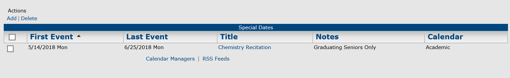
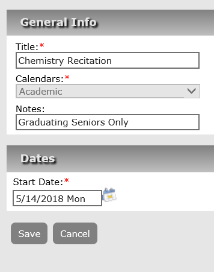

Use the Filters area to search for the Special Date(s) you want to edit. (See field definitions below)
Special Dates, Search Criteria
Field
Description
Start Date/End Date
Search for special dates that occur on or after the indicated start date, on or before the indicated end date, or within the specified date range. Leave these fields blank to search for all special dates in Master Calendar, regardless of the date.
Keyword
The keyword can be displayed in the special date title or notes.
Calendars
A list of all active calendars to which you have access as Calendar Manager. By default, All calendars to which you have access are selected as the search criterion. To filter this list, click the Lookup icon to open the Calendars dialog box and clear the selections for the calendars that you do not want to include in the search.
Click Search. The page refreshes to list all special dates that meet your search criteria.

You can delete a Special Date by selecting the checkbox next to it and clicking Actions > Delete. This removes it from the Special Dates page and you will no longer be able to apply this special date.
- Click on the title of the special date that you want to edit. The Special Dates page opens on the All tab. The page now has three tabs (All, Current, and Historical) and a Details section. By default, the All tab is the opened tab.

For recurrent special dates, you can add more occurrences by clicking the Add Special Dates option.
Click the Edit icon next to the selected date to edit existing information. The General Info page opens.

Edit the information for the special date as needed.
General Info Page Fields
Field
Description
Title
The title or name of the special date.
Calendars
A list of all active calendars to which you have access as Calendar Manager. Click the Lookup icon to open the Calendars dialog box and select the calendars to which you are adding the special date.
Notes
Any special information that you want associated with the special date. Notes can be displayed next to the special date title on calendar lists and in calendar date cells.
Start Date
The start date for the special date.
- Click Save to save the edited special date in Master Calendar.
- To return to the Special Dates page, click Back to Manage Special Dates.